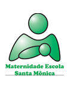

Transformando a assistência materno-infantil através da inovação digital, pesquisa e educação.

O PET Saúde Digital é um Programa de Educação pelo Trabalho para a Saúde vinculado à Maternidade Santa Mônica (MESM) da Universidade Estadual de Ciências da Saúde de Alagoas (UNCISAL). Nosso grupo trabalha na intersecção entre saúde, tecnologia e educação, buscando soluções inovadoras para a assistência materno-infantil.
Formado por estudantes de diferentes cursos (bolsistas e não-bolsistas) sob orientação de tutores docentes, o grupo desenvolve atividades de pesquisa, extensão e ensino com foco na digitalização e humanização dos serviços de saúde.
A Maternidade Santa Mônica é um hospital-escola de referência em assistência materno-infantil, oferecendo um ambiente único para a integração entre prática clínica, pesquisa acadêmica e inovação tecnológica.
Integrar tecnologia e cuidado para transformar a experiência de mães e profissionais.
Ser referência nacional em inovação digital para saúde materno-infantil.
Pesquisa, colaboração, humanização e excelência acadêmica.
Gerar conhecimento e produtos tecnológicos de impacto na saúde pública.
Arraste para interagir com a nuvem de tags
Petianas, tutores e preceptores que constroem o projeto
Nossas metas estão organizadas em três eixos principais de atuação.
Acompanhe a trajetória do PET Saúde Digital na Maternidade Santa Mônica.
Em 23 de fevereiro de 2026, alcançamos nossa amostra final com 363 usuárias e 307 profissionais da MESM, totalizando 670 respondentes.
Aplicativo mobile para apoio às gestantes e mães durante internação e pós-parto.
Plataforma web para centralização e divulgação dos produtos e materiais educacionais.
Mapeamento completo de 63 setores com análise das necessidades tecnológicas.
Elaboração de artigos científicos a partir dos dados coletados.
Dúvidas, sugestões ou parcerias? Fale com a equipe do PET Saúde Digital.